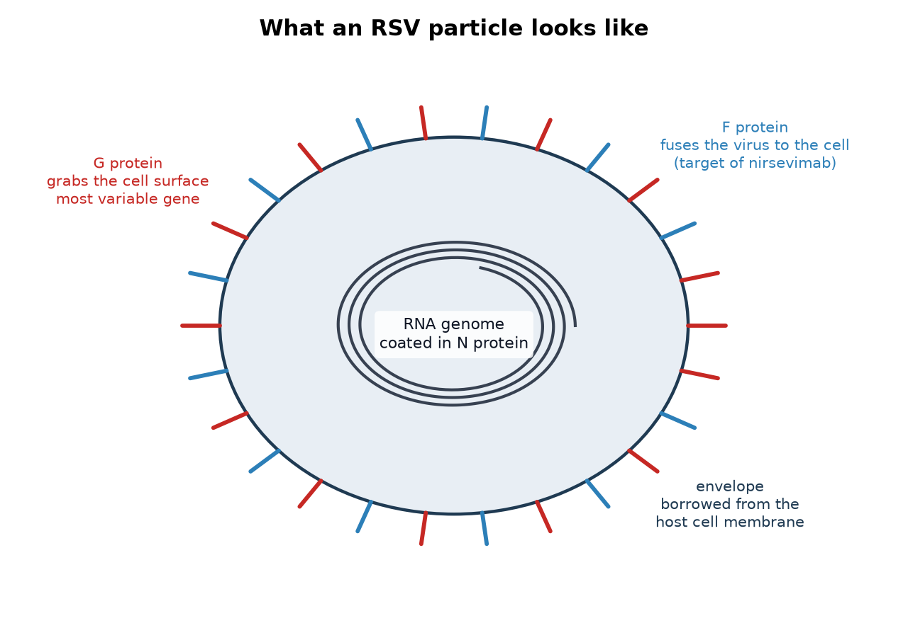
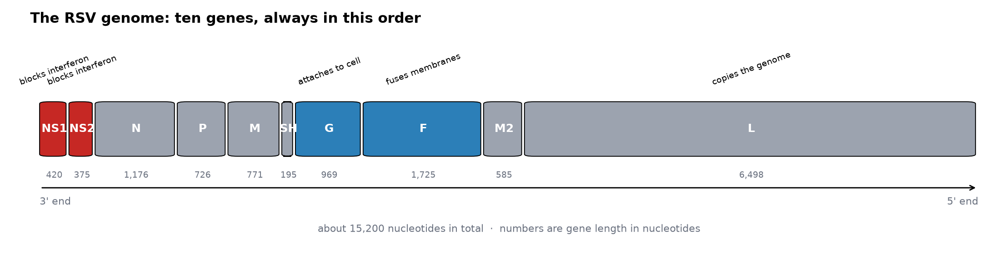
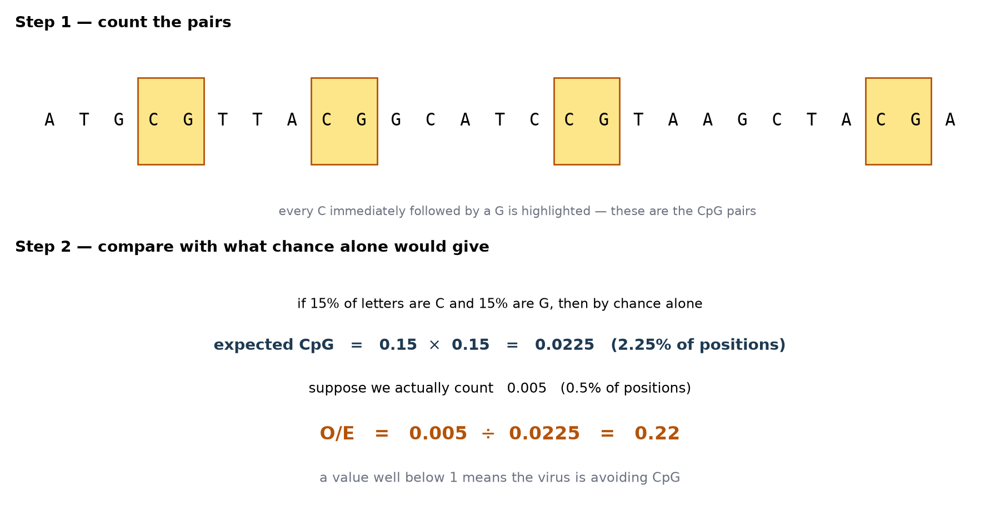
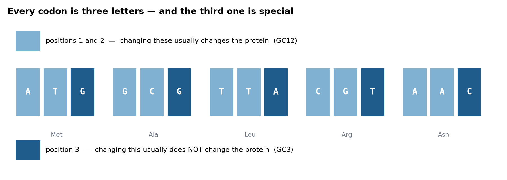
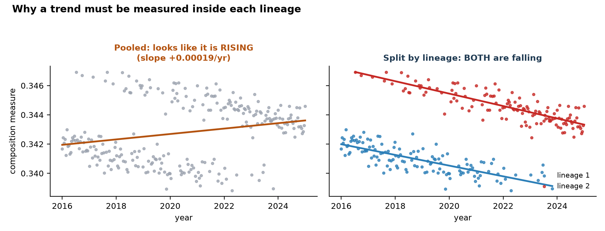
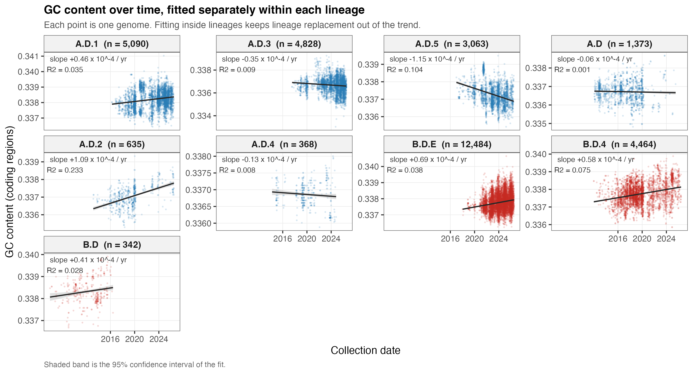
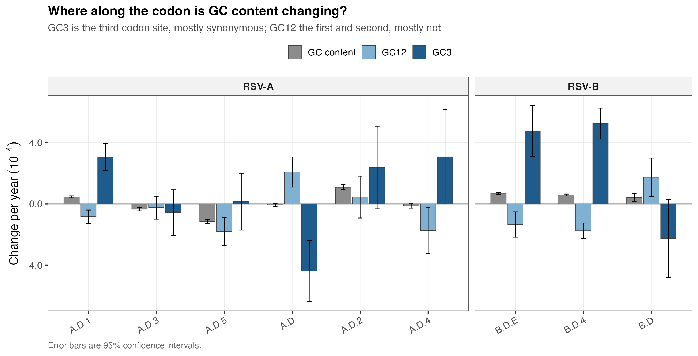
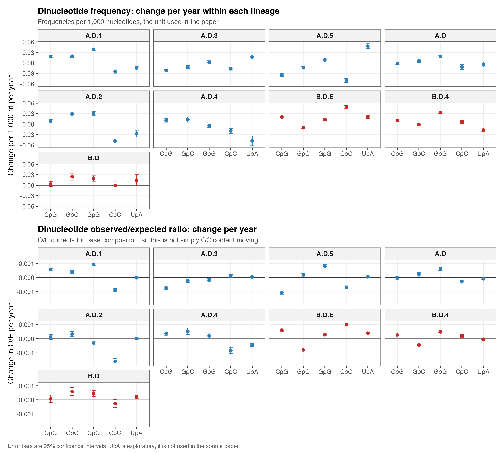
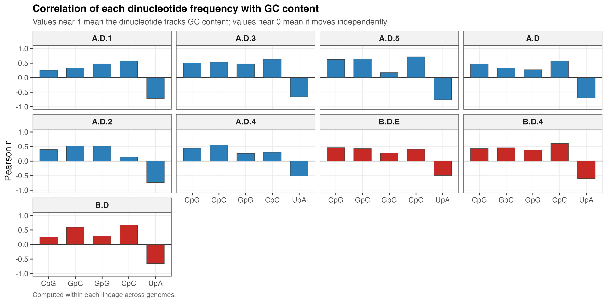
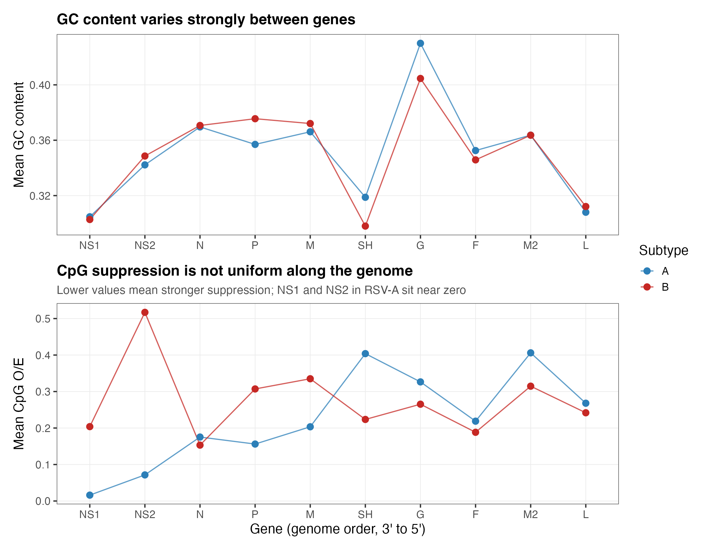

零基礎入門指南
這個病毒是什麼、我們怎樣讀它的 genome(基因組)、以及這個項目到底量度了什麼 —— 不預設任何病毒學背景。
在任何基因組分析說得通之前,你需要先知道 RSV 到底是什麼。
病毒不是細胞,按一般定義也不算活著。它是一包被蛋白質包裹的遺傳指令,自己什麼都做不到 —— 沒有產生能量的方法,也沒有製造蛋白質的機器。放在枱面上,它就只是靜靜躺著。
它唯一能做的,是進入一個活細胞,然後把自己的指令交出去。細胞本身的機器會讀這些指令,製造出新的病毒顆粒,通常犧牲掉細胞原本該做的工作。最後細胞釋放或破裂,新顆粒再去感染其他細胞。
遺傳指令有兩種形式。有些病毒用 DNA(去氧核糖核酸),跟你自己的基因是同一種分子;另一些用 RNA(核糖核酸),一種很相近的分子。RSV 屬於 RNA 病毒。
這一點比聽起來重要:複製 RNA 的酵素比複製 DNA 的出錯率高得多。所以 RNA 病毒突變得很快,這也是它們能夠一季一季地改變的原因。
RSV(呼吸道合胞病毒)全寫是 Respiratory Syncytial Virus。「Respiratory(呼吸道)」是因為它感染氣道;「Syncytial(合胞)」是因為被感染的細胞會融合成一團多核的大細胞,叫做 syncytium(合胞體),這是它對組織做的一件很有辨識度的事。
它極之常見。基本上每個小朋友兩歲前都會感染過 RSV,而且因為對它的免疫力維持不久,人一生中會重複感染。健康成人感染起來像一場重感冒;但對嬰兒、長者和免疫力弱的人,它可以造成 bronchiolitis(細支氣管炎)和肺炎,是全球嬰兒住院的主要原因之一。
所以 RSV 並不是什麼罕見的病毒。它是一個長期存在於人類社會、非常普通的病毒 —— 這一點請記住,因為它最後會成為理解本項目結果的關鍵。
RSV 顆粒大致呈球形,也會形成長絲狀。由外到內分三層。

最外層是 envelope(包膜),一層油脂膜,是病毒離開上一個細胞時「順手帶走」的。膜上插著蛋白質突起,其中兩種很重要:G 負責抓住人類細胞的表面,F 則把病毒與細胞的膜拉在一起融合,好讓內容物送進去。
裡面是基因組,但它從不裸露。整條基因組被大量 N 蛋白包裹,形成一條柔軟捲曲的結構,叫 nucleocapsid(核衣殼)。跟著一起進去的還有病毒一進細胞就要用的酵素。
RSV 的 genome(基因組)是一條大約 15,200 個字母長的 RNA。寫出來就是一串大約 15,200 個字元,來自四個字母的字母表:A、C、G、T。
關於字母的小註
RNA 實際上用 U(尿嘧啶)代替 DNA 的 T(胸腺嘧啶)。但序列資料庫習慣一律用 DNA 字母儲存,所以你從頭到尾都會看到 T,本項目也一樣。論文寫「UpA」而我們寫「TpA」時,指的是同一個東西。
基因組分成十個 gene(基因),每一個是一段編碼一種蛋白質的字母。它們的排列順序永遠相同。

最後那一點值得停下來想一想。如果你計算整個基因組的平均值,L 基因就貢獻了接近一半。一個只發生在 NS1 這種小基因上的真實變化,在全基因組平均值裡幾乎看不見。這正是本項目要逐個基因分開量度的原因。
| 基因 | 長度 | 功能 |
|---|---|---|
| NS1 | 420 | 阻斷 interferon(干擾素),即細胞的抗病毒警報 |
| NS2 | 375 | 同樣阻斷干擾素,與 NS1 配合 |
| N | 1,176 | 包裹整條基因組 |
| P | 726 | 複製酵素的搭檔 |
| M | 771 | 基質蛋白,維持顆粒結構 |
| SH | 195 | 最小的基因,在膜上形成通道 |
| G | 969 | 把病毒黏附到細胞上。變異最快的基因 |
| F | 1,725 | 融合膜。nirsevimab 與疫苗的靶點 |
| M2 | 585 | 調控轉錄 |
| L | 6,498 | 複製基因組的酵素。遠比其他基因大 |
其中四個在本項目裡反覆出現。
NS1 與 NS2 是病毒對你免疫系統的反擊。當細胞偵測到病毒,它會釋放 interferon(干擾素) —— 一種化學警報,叫鄰近細胞開啟防禦。NS1 和 NS2 會干擾這個訊號,替病毒爭取時間在身體反應過來之前先複製。
G 在外面,所以抗體不斷攻擊它,因此它比任何其他 RSV 基因變得都快。它還有一個特點:某些 lineage 的 G 基因裡多插了 72 個字母,這在把基因組對齊時會造成技術上的麻煩。
F 同樣在外面,但比 G 保守得多,因為它的形狀必須精確才能完成融合。正是這份保守性,令藥廠選它而不是 G 作為靶點。
簡單講一下,因為這個機制解釋了為何有些基因表達得比其他多。
為什麼基因順序重要
因為 L 嚴格由一端開始讀,而且偶爾會掉下來,所以排在前面的基因被轉錄的次數遠多於後面的。NS1 和 NS2 排第一第二,所以在感染早期會被大量製造 —— 剛好合適,因為它們的工作正是在警報響起之前把它關掉。L 排最後,製造量最少,但這沒問題,因為酵素只需要一點點。
RSV 有兩種形式,RSV-A 與 RSV-B。它們很久以前從共同祖先分開,現在在基因上已經明顯不同,雖然造成的疾病一樣。
兩者同時流行,經常是一型主導一兩季之後換另一型。因為它們是分開的演化支線,本項目全程把兩者分開分析;混在一起會把真實的規律模糊掉。唯一把它們放在一起的場合,是互相比較的時候 —— 而結果最有趣的發現剛好就在那裡。
給你一個差異的概念:NS1 基因在 A 型和 B 型之間,字母層面大約只有 78% 相同。即是說大概每五個字母就有一個不同。
在每個亞型之內,RSV 繼續分化。病毒傳播時會累積突變,族群就分裂成一條條分支。每一條有名字的分支就是一個 lineage(譜系)。
Lineage 的名稱是階層式的,每一個點代表一次更細的分支:
所以 A.D.1.5 屬於 A.D.1,而 A.D.1 屬於 A.D。如果你覺得這跟疫情期間 SARS-CoV-2 用的 Pango 命名很像,那是因為兩者用的是同一套概念。
Lineage 不是永久的。一個新的出現、擴散、主導幾季,然後被另一個取代。這種不斷的更替是第三部分的核心,因為它可以在數據裡造出看似演化、其實不是的規律。
RSV 有很強的 seasonality(季節性)。在溫帶國家,它秋末來、冬天高峰、春天消退。南半球同樣的規律相差半年,所以全球任何時候都有某處在 RSV 季節。
有兩件歷史事件在任何 RSV 數據集裡都看得很清楚:
直到最近,基本上沒有辦法。2023 年起有兩種方式,兩者都針對 F 蛋白:
因為這些都針對 F,F 基因的任何變化現在都有直接的臨床意義。這正是本項目最有希望的下一步,見第 33 節。
本項目量度的每一樣東西,都是字母本身的性質。以下逐個解釋。
對我們而言,一個 RSV 基因組就是一串大約 15,200 個字元:
在硬碟上它真的就只是這樣。接下來做的全部事情,都是在這串文字裡數數和比較。你不需要實驗室,只需要文字和一部電腦 —— 這正是這類研究的門檻低的原因。
序列用一種叫 FASTA 的格式儲存:一行以 > 開頭的標題行,下面跟著字母。
醫院從病人身上採樣,抽出病毒的 RNA,送進定序儀。結果連同樣本資料 —— 採集日期、國家、宿主、所屬 lineage —— 一起上載到共用資料庫。
RSV 和流感用的資料庫是 GISAID。它本來為流感監測而建,後來擴展到其他病毒。使用它要同意一份限制轉發的條款,所以本項目的程式碼庫裡完全沒有任何序列,只有程式碼和匯總結果。
這批數據是什麼,不是什麼
這是 surveillance data(監測數據),不是設計好的研究。沒有人挑選過一個平衡的樣本,它只是各個實驗室剛好定序並上載的東西,而這取決於經費、設備和國家政策。歐洲的比重嚴重偏高;有些國家要買了定序儀之後才出現在數據裡。任何隨時間出現的規律,都可能有一部分只是「誰在定序」的規律。把這種偏差當成任何結果的預設解釋,是這個領域裡最有用的習慣。
要在幾萬個基因組之間比較同一個基因,你得知道每個基因在每條序列裡從哪裡開始、到哪裡結束。你不能直接用固定位置,因為基因組長度不一 —— 有些有插入,有些有缺失。
做法是用一條 reference genome(參考基因組):一條研究得很透徹、已經標註好十個基因邊界的基因組。其他所有基因組都跟它對齊,這個過程叫 alignment(序列比對),然後把基因邊界對應過去。
本項目用 MAFFT 做比對,每個亞型用一條來自公開 NCBI 資料庫的參考序列。有一個細節必須做對:比對時保留插入片段而不是把它剪掉。某些 RSV lineage 的 G 基因裡多了那 72 個字母,粗心的比對會默默把它切走 —— 剛好毀掉我們最關心的基因。我們檢查過:G 基因得出 969 個字母,而參考序列是 897 個,正好是參考長度加上那段已知的 72 字母重複。
最簡單的量度。數一數有多少個字母是 G 或 C,除以總數。
RSV 大約是 0.33,即是說大概三分之一的基因組是 G 或 C,三分之二是 A 或 T。不同生物、不同病毒的數值差很遠,而同一條基因組之內也會逐個基因不同。
定序失敗的位置會標成 N。我們直接跳過這些位置而不是去猜,所以它們不會扭曲計數。
Dinucleotide(二核苷酸)就是相鄰的一對字母。讀 ACGT 會得到三對:AC、CG、GT。
這個領域最關心的一對,是一個 C 緊接著一個 G,寫作 CpG。中間那個「p」指的是兩者之間的化學鍵,它的作用是講清楚我們指的是同一條鏈上前後相鄰的兩個字母。
如果你已經在人類遺傳學裡學過 CpG
你可能是在 DNA methylation(DNA 甲基化)、CpG island(CpG 島)和基因啟動子的脈絡下認識 CpG 的。那些在這裡完全不適用。RNA 病毒不會那樣被甲基化,也沒有 CpG island。CpG 對病毒之所以重要,原因完全不同,在第 18 節解釋。公式一樣,生物學不一樣。
本項目追蹤五對:CpG、GpC、GpG、CpC 和 UpA。前四對是我們參照的流感論文所用的。UpA 是額外加的,因為更廣泛的文獻把它視為 CpG 的「同伴」—— 同樣被壓抑,同樣跟免疫辨識有關 —— 但它研究得沒那麼透徹,所以我們標明它屬於探索性質。
直接數 CpG 會誤導人。一條 G 和 C 很多的基因組,單憑機率就會含有更多 CpG。要問病毒是不是主動迴避這一對,你必須跟「純粹靠機率會出現多少」比較。

計算方式是:
解讀方式:
RSV 的 CpG O/E 大約是 0.24。這是很強的壓抑:病毒只帶著它自身鹼基組成所預測的四分之一左右的 CpG。另外三對含 GC 的二核苷酸都接近或高於 1.0,所以這是 CpG 專有的現象,而不是整體缺乏 G 和 C。
編碼蛋白質的區域是每三個字母一組來讀。每一組三字母叫一個 codon(密碼子),指定一個 amino acid(氨基酸),即組成蛋白質的建築材料。
遺傳密碼是冗餘的:同一個氨基酸常常有好幾個密碼子可以表示,而它們通常只差在第三個字母。GCT、GCC、GCA、GCG 全部都代表 alanine(丙氨酸)。

這給了我們兩個很有用的量度:
為什麼這個比較威力很大
如果成分在 GC3 變得快、在 GC12 變得慢,那麼造成變化的東西是作用在 RNA 分子本身,而不是蛋白質 —— 因為它只改動了蛋白質不在乎的字母。如果兩者一起動,那蛋白質多半有份。這是本項目最鋒利的工具,而流感那篇論文最清晰的結果正是由它得出:GC3 下降的速度比 GC12 快約 5.65 倍。
那麼,病毒為什麼要迴避某一對特定的字母?
人類細胞裡有一種蛋白叫 ZAP(zinc-finger antiviral protein,鋅指抗病毒蛋白)。ZAP 會特異地結合到病毒 RNA 的 CpG 位點上,並標記那段 RNA 讓它被銷毀。實際效果是:病毒基因組裡每一個 CpG,都是免疫系統可以抓住它的把手。
結果就是,長期在人類之間流行的病毒,往往帶著比機率應有更少的 CpG。它們在漫長歲月裡,把把手一個個銼掉了。這一點有實驗證據:當研究人員刻意在流感基因組裡加入額外的 CpG,病毒複製得更差,而且引發更強的免疫反應。
把結論講得準確
ZAP 是這個領域的主流解釋,而且證據相當充分。但請留意,它是對「序列中觀察到的規律」的一個解釋。本項目觀察到規律,但沒有證明機制。要證明 ZAP 在 RSV 裡真的負責,需要實驗室工作 —— 把 CpG 位點放回病毒裡,再量度它在有 ZAP 的細胞裡是否比在沒有 ZAP 的細胞裡長得差。寫報告時值得把這點講清楚。有趣的是,我們參照的那篇流感論文其實並沒有提到 ZAP,它只引用了 CpG 的實驗研究而沒有指名機制。
四個統計概念,每一個都改變了這個項目的做法。
要問某樣東西有沒有隨時間改變,你把量度值對日期畫出來,然後穿過這些點擬合一條直線。那條線的 slope(斜率)就是答案:每年改變多少。
正斜率代表上升,負的代表下降,接近零代表沒有趨勢。本項目的斜率大約是每年 0.0001,十年下來約等於零點一個百分點。很小。
斜率旁邊還有 R²,它說明這條線實際上解釋了多少散佈,數值由 0 到 1。一個斜率可以是真的,但如果點散得很開,R² 仍然可以很小 —— 而我們看到的正是這種情況。
由數據算出來的斜率是一個估計值,不是事實。95% confidence interval(95% 信賴區間)是與數據相符的數值範圍。如果這個範圍包含零,你就不能排除「其實沒有趨勢」。
數據越多、時間跨度越長,信賴區間就越窄。這就是為什麼本項目必須小心挑選要納入哪些 lineage:一個只觀察了五年、只有 200 條基因組的 lineage,算出來的斜率不確定到沒有用。
p-value(p 值)只回答一個很窄的問題:假如其實完全沒有效應,你看到這麼強的規律的機率有多大?p 值小代表「大概不只是碰巧」。
問題在於 p 值取決於樣本大小。有 33,000 條基因組時,幾乎任何差異 —— 無論多微小、多沒意義 —— 都會顯示為高度顯著。
請記住這條規則
在這個樣本量下,p 值只告訴你某個效應不是雜訊。它不告訴你這個效應重要。要判斷重要性,看效應的大小,以及它在各個獨立群組裡是否都指向同一方向。留意流感那篇論文怎樣報告結果:是「每年 −0.064%」,而不是 p 值。
Confounder(混淆因子)是第三個因素,它跟你正在比較的兩者一起變動,造出一個其實並不存在的關聯。
本項目有一個很嚴重的。2015 到 2026 年間,RSV 定序的地理分佈完全改變了:大洋洲在 2015 年提供了 38% 的基因組,到 2026 年只剩 4%;而歐洲由 18% 升到 56%。所以「時間比較晚」同時也意味著「比較可能來自歐洲」。如果歐洲和大洋洲的病毒因為無關的原因而成分不同,一個純粹地理上的差異就會表現成隨時間的趨勢。
解決辦法是把地區當作 covariate(共變量)放進模型,等於是在固定地理的前提下再問一次同樣的問題。我們兩種結果都報告;能挺過這一關的趨勢可信得多。
這一節值得好好理解,因為本項目的早期版本真的在這裡出過錯。
整個族群的平均值可以因為兩個完全不同的原因而移動:

第二種情況會產生一條看起來很有說服力的趨勢線,背後卻完全沒有演化。本項目早期跑的時候正正發生了這件事:把所有數據合併,RSV-B 的 CpG 比值看起來穩定上升;但分開在每個 lineage 之內擬合,它其實在下降。原來是一個高 CpG 的 lineage 取代了一個低 CpG 的。
解決辦法是結構上的而不是統計上的:永遠在每個 lineage 之內分開擬合趨勢,不要用合併的數據。流感那篇論文也是這樣做的,這也是我們判斷這個做法正確的理由之一。
六個步驟、結果,以及對哪些部分真的成功了的誠實交代。
起點是 2026 年 Ye 等人發表在 Nature Microbiology 的一篇研究。他們量度了 115,520 條流感 A 型病毒基因組的 GC content 和含 GC 的二核苷酸頻率。
流感 A 型天然寄居在野鳥身上。偶爾它會跳到哺乳類身上,然後出現兩種結果之一。通常是 sporadic(零星感染):幾個病例,然後消失。少數情況會變成 sustained(持續傳播),在新宿主裡立足並流行多年 —— 人類季節性流感、豬流感、狗流感全部都是這樣開始的。
他們的發現是:達成持續傳播的那些 lineage,其 GC 含量和 GC 二核苷酸頻率隨時間下降;而且這些 lineage 最早期的病毒在尚未立足之前就已經是那個樣子。這令這個訊號有潛在的預測價值,所以他們提議把它納入大流行風險評估。
這裡的任務,是測試另一個病毒家族裡是否存在類似訊號,從 RSV 開始。問題變成:
研究問題
在每個 RSV lineage 之內,基因組成分如何隨時間改變?RSV-A 和 RSV-B 的規律是否不同?
RSV 序列從 GISAID 分八批下載,按亞型和日期範圍切開,因為資料庫一次能匯出的數量有限。每一批是一個序列檔,加上最多三個獨立的 metadata 表格,要用 accession number(序號)對應起來。
合併後得到 33,040 條基因組:15,458 條 RSV-A 和 17,582 條 RSV-B,採集於 2001 至 2026 年。有六條序列出現在多過一批裡,已去除重複。
不是每條上載的序列都可用。我們只保留通過三項檢查的基因組:
| 檢查項目 | 門檻 | 理由 |
|---|---|---|
| 長度 | 14,900–15,400 個字母 | 保留完整基因組,剔除碎片 |
| 模糊字母 | 最多 1% | N 位置會扭曲字母計數 |
| 採集日期 | 必須完整 | 需要用來定位時間 |
33,040 條之中有 33,038 條通過。門檻設得寬鬆,因為下載時已經限定為完整、高覆蓋度的基因組。
之後審視數據時,發現了幾個嚴重到足以改變分析方式的問題:
2026 年尾段不完整。下載是在 2026 年 10 月做的,但序列由採集到上載要幾個月。逐月跟 2025 年同月比較,就能把上載延遲和正常季節性分開:到五月為止,2026 年維持在前一年的 78–93%,然後六月跌到 53%、七月 29%、八月只有 5% —— 同一個月份,2025 年有 399 條,2026 年只有 18 條。那些月份是只由「上載得快的實驗室」貢獻的非隨機樣本。決定:分析窗口訂為 2001 年至 2026 年 6 月底。
更早的數據全部保留。把稀疏的早年數據丟掉很誘人,但樣本量隨時間不均並不會令斜率有偏差 —— 它只是令後期的年份估計得更精確。對某些 lineage 而言,舊數據增加了好幾年的跨度,而如第 20 節所說,跨度越長斜率越精確。B.D.4 這條 lineage 就因此多了接近三年。
但孤立的早期基因組很危險。A.D.3 這條 lineage 本來會因為 2010 年的一條序列而往前多算 6.9 年。一個離其他所有點七年之遠的孤點,對擬合線有極大的槓桿作用。決定:每條 lineage 都裁剪到它真正有被採樣的那段年份,把頭尾少於 5 條基因組的年份丟掉。採樣充分的早期數據會留下來 —— A.D 這條 lineage 頭三年仍然保有 361 條基因組。
地理分佈會漂移,連在單一 lineage 之內也會。第 22 節講的混淆問題,在單條 lineage 內部依然存在 —— A.D 由早期 71% 大洋洲變成晚期 36% 歐洲。決定:把地區當共變量納入,兩種結果都報告。
還有一個問題記錄下來但沒有修正:很強的季節性,十二月的基因組數是九月的三至四倍。
最終分析集:32,647 條基因組,9 條 lineage。
對每條基因組,我們計算 GC content、五種二核苷酸的頻率、它們的 O/E 比值,以及 GC3 和 GC12。模糊位置直接跳過。
有一個技術要點:基因組層面的 GC3 是在十個編碼區接合起來之上計算的,而不是原始基因組。編碼區以外沒有讀框,「第三個密碼子位置」在那裡根本沒有意義。流感那篇論文基於同樣理由也是這樣做。
每條基因組跟它所屬亞型的參考序列對齊,然後按第 13 節所述切出十個基因。這產生了 363,418 筆記錄 —— 33,038 條基因組乘以十一,即十個基因加上每條一筆「全編碼區」的記錄。
這一步需要一個判斷。完整的 GISAID lineage 標籤太細:大部分只涵蓋約六年、幾百條基因組,而如第 20 節所說,那樣算出來的斜率不確定到不能用。
把標籤截短到三層 —— 即 A.D.1.5 變成 A.D.1 —— 就得到比較少但比較大的群組:
| 標籤層級 | 群組數 | 年份中位數 | 基因組中位數 |
|---|---|---|---|
| 完整標籤 | 56 | 6 | 210 |
| 三層 | 12 | 10 | 822 |
| 只分亞型 | 3 | 12 | 15,052 |
再要求至少 5 年和 200 條基因組,然後裁剪到各自真正被採樣的年份,最後剩下 9 條 lineage —— 六條 RSV-A、三條 RSV-B。跨度由 8.5 年到 14.4 年,而且每一條在頭三年都至少有 31 條基因組,所以沒有任何一條擬合線是建立在一個孤立的早期點之上。
選三層是一個決定,所以整個分析會在四層再跑一次作為檢驗。
基於第 23 節的理由,每個特徵都是在每條 lineage 之內分開對採集日期做迴歸。日期換算成小數年份,所以 2017 年 7 月 2 日變成約 2017.5 —— 用盡日期的精度而不是只取整年。
每次擬合都跑兩遍:一次直接跑,一次固定地區。

這是核心結果,而它是一個否定的結果。在流感那份研究裡,十二條 lineage 全部朝同一方向。這裡並非如此。

在流感裡兩者都下降,GC3 快約 5.65 倍。RSV 不一樣:兩類位置朝相反方向移動。這本身是有意思的 —— 代表同義位點和非同義位點受到不同的壓力 —— 但這不是流感的那個特徵,不應該被說成「重現了」它。



時間趨勢分析 —— 也就是主要問題 —— 沒有找到一致的規律:
怎樣看待一個否定結果
RSV 在人類之間已經流行了非常久,早就適應了我們。流感那個結果來自剛剛進入新宿主、還在調整的 lineage。人類 RSV 內部並沒有相應的「轉變」正在發生。所以找不到方向性趨勢是一個合理的生物學結果,而不是分析失敗。一個誠實報告的否定結果,比一個靠挑選「剛好有效的分析方法」得來的肯定結果有價值得多。
它根本不是時間上的,而是基因之間和亞型之間的差異。
| 基因 | RSV-A 每基因 CpG 數 | RSV-B 每基因 CpG 數 | RSV-A 中 CpG 為零的比例 |
|---|---|---|---|
| NS1 | 0.16 | 1.94 | 84.8% |
| NS2 | 0.76 | 5.64 | 34.2% |
| N | 6.86 | 6.09 | 0% |
| L | 41.2 | 38.2 | 0% |
在 RSV-A 裡,整條 NS1 基因平均只含 0.16 個 CpG 對,而且大約 85% 的 RSV-A 基因組,整條 NS1 裡一個 CpG 都沒有。RSV-B 的同一條基因平均有約 1.94 個。NS2 呈現同樣的規律但較弱。
有四點令這個發現站得住腳:
還有一個細節令它更有力。NS1 在 A 和 B 之間只有約 78% 相同,兩個版本已經分化得相當多。然而 GC content 基本維持不變,CpG 卻差了十二倍。隨機漂移會令兩者一起變動。是某種力量固定了其中一個,同時只在一個亞型裡把另一個壓下去。
尚未解決的問題
這件事是不是已經有人發表過?兩次文獻搜尋都沒有找到,但這是很弱的「不存在」證據。RSV 整體的 CpG 減少是有文獻記載的 —— 2025 年一篇綜述把 RSV 列為「以 C/G 結尾的密碼子減少最明顯」的人類呼吸道病毒之一。但基因層面的亞型不對稱沒有找到。在宣稱這是新發現之前,需要透過 PubMed 和 Google Scholar 做一次正式搜尋。這一個問題就決定了這個項目到底有沒有成果。
三個選項,按產出可報告成果的機會率排序。
自 2023 年起,nirsevimab 在整個人口層面給嬰兒使用,史上第一次對 F 蛋白施加了刻意的免疫壓力。抗藥性有沒有出現,是現在多個監測團隊正在發表的、活躍而未解決的問題。
本項目已經具備條件。數據橫跨 2015 至 2026 年,涵蓋推行前後,而流程已經能正確切出 F 基因。我們確認過它能可靠讀出相關的抗體結合位置,而且兩個亞型的「正常」氨基酸剛好如文獻所述不同:RSV-A 在第 201 位是 K,RSV-B 是 N —— 這正是兩個亞型需要留意的突變不一樣的原因。
分析內容是:追蹤已知抗藥性相關取代在推行前後、按年份和亞型的頻率。無論結果如何都很可能可以報告:發現沒有上升本身就是一個監測結果(已有數個團隊發表過),而發現有上升則意義重大。
如上所述做一次系統性文獻搜尋。半天時間,而它決定了現有結果值不值得繼續發展。
如果結果是新的,自然的下一步是問:那些沒有 CpG 的位置,本來能不能在不改變蛋白質的前提下帶有 CpG?如果可以,那這種缺失就必定是作用在 RNA 上的選擇,而不是蛋白質的限制。標準做法是一個固定氨基酸序列、只打亂同義密碼子的 Monte Carlo 虛無模型。
本指南用到的所有專業名詞。
| English | 中文 | 說明 |
|---|---|---|
| Alignment | 序列比對 | 把多條序列排列對齊,令相對應的位置互相對上,好讓你在不同基因組裡找到同一個基因。 |
| Ambiguous base | 模糊鹼基 | 定序無法判定字母的位置,寫作 N。 |
| Amino acid | 氨基酸 | 組成蛋白質的建築材料。 |
| Bronchiolitis | 細支氣管炎 | 小氣道發炎,RSV 在嬰兒身上的嚴重表現。 |
| Codon | 密碼子 | 編碼區中的三個字母一組,指定一個氨基酸。 |
| Confidence interval | 信賴區間 | 與數據相符的估計值範圍。95% 區間若包含零,就不能排除沒有效應。 |
| Confounder | 混淆因子 | 與比較的兩者一同變動的第三個因素,會造出並不存在的關聯。 |
| Covariate | 共變量 | 加進統計模型以固定其影響的變數。 |
| CpG | CpG 二核苷酸 | 一個 C 緊接一個 G。抗病毒蛋白 ZAP 辨識的標記。 |
| Dinucleotide | 二核苷酸 | 序列中任何相鄰的一對字母。 |
| Envelope | 包膜 | 病毒顆粒的外層油脂膜,取自上一個宿主細胞。 |
| FASTA | FASTA 格式 | 儲存序列的標準文字格式:一行以 > 開頭的標題,然後是字母。 |
| GC content | GC 含量 | 序列中屬於 G 或 C 的字母比例。 |
| GC3 / GC12 | 第三位 / 第一二位 GC 含量 | 密碼子第三位置對比第一、二位置的 GC 含量。比較兩者可區分作用於 RNA 與作用於蛋白質的壓力。 |
| Gene | 基因 | 編碼一種蛋白質的一段基因組。RSV 有十個。 |
| Genome | 基因組 | 一個生物體的全套遺傳指令。 |
| GISAID | GISAID 資料庫 | 本項目使用的國際病毒序列資料庫,其條款限制轉發。 |
| Interferon | 干擾素 | 細胞偵測到病毒時釋放的警報訊號。RSV 的 NS1 和 NS2 蛋白會壓制它。 |
| Lineage | 譜系 | 病毒家族樹上一條有名字的分支。標籤是階層式的,例如 A.D.1.5。 |
| MAFFT | MAFFT 軟體 | 本項目用來把序列對齊到參考基因組的軟體。 |
| Monoclonal antibody | 單株抗體 | 實驗室製造的單一種抗體,可直接注射提供保護。 |
| NCBI | NCBI 資料庫 | 美國的公開序列資料庫。與 GISAID 不同,它沒有轉發限制,所以參考基因組取自這裡。 |
| Nirsevimab | 尼塞維單抗 | 2023 年起使用的長效單株抗體,給嬰兒預防重症 RSV,靶點是 F 蛋白。 |
| Non-synonymous | 非同義 | 會改變所編碼蛋白質的變異。 |
| Nucleocapsid | 核衣殼 | 病毒基因組連同包裹它的蛋白質。 |
| O/E ratio | 實際/期望比值 | 實際值除以期望值。某二核苷酸實際出現的頻率,除以機率所預測的。低於 1 代表被壓抑。 |
| Paramyxovirus | 副黏液病毒 | 包含 RSV、麻疹、腮腺炎、Nipah 和 Hendra 的病毒家族。 |
| p-value | p 值 | 若其實沒有效應,出現這麼強規律的機率。樣本極大時會失去參考價值。 |
| Quality control | 品質控制 | 分析前剔除不完整或不可靠序列的過濾步驟。 |
| Reference genome | 參考基因組 | 一條已標註好基因位置、研究透徹的基因組,用作在其他基因組中定位基因的地圖。 |
| Regression | 迴歸 | 在數據中擬合一條直線,估計一個量如何隨另一個量改變。 |
| RSV | 呼吸道合胞病毒 | Respiratory Syncytial Virus,分 A、B 兩個亞型。 |
| R squared | 決定係數 | 擬合線解釋了數據中多少散佈,由 0 到 1。 |
| Seasonality | 季節性 | 一年之內有規律的高低起伏。 |
| Simpson's paradox | 辛普森悖論 | 合併數據中的趨勢,在分成真正的組別後消失或反轉。 |
| Slope | 斜率 | 迴歸估計出來的變化率,本項目以「每年」為單位。 |
| Sporadic transmission | 零星傳播 | 病毒感染新宿主物種幾次後消失,未能建立傳播鏈。 |
| Subtype | 亞型 | 病毒物種內的主要分支。RSV 分 A 和 B。 |
| Surveillance data | 監測數據 | 由日常公共衛生監測累積而來的數據,並非為研究而設計的樣本。 |
| Sustained transmission | 持續傳播 | 病毒在某個宿主物種中立足並持續流行多年。 |
| Synonymous | 同義 | 不改變所編碼蛋白質的序列變異。 |
| Syncytium | 合胞體 | 受感染細胞融合而成的多核團塊。RSV 的名字由此而來。 |
| UpA (TpA) | UpA 二核苷酸 | 一個 U(或 T)後面接一個 A。被視為 CpG 的同伴標記,在本項目屬探索性質。 |
| ZAP | 鋅指抗病毒蛋白 | Zinc-finger antiviral protein。人類蛋白,結合病毒 RNA 的 CpG 位點並標記它銷毀。 |